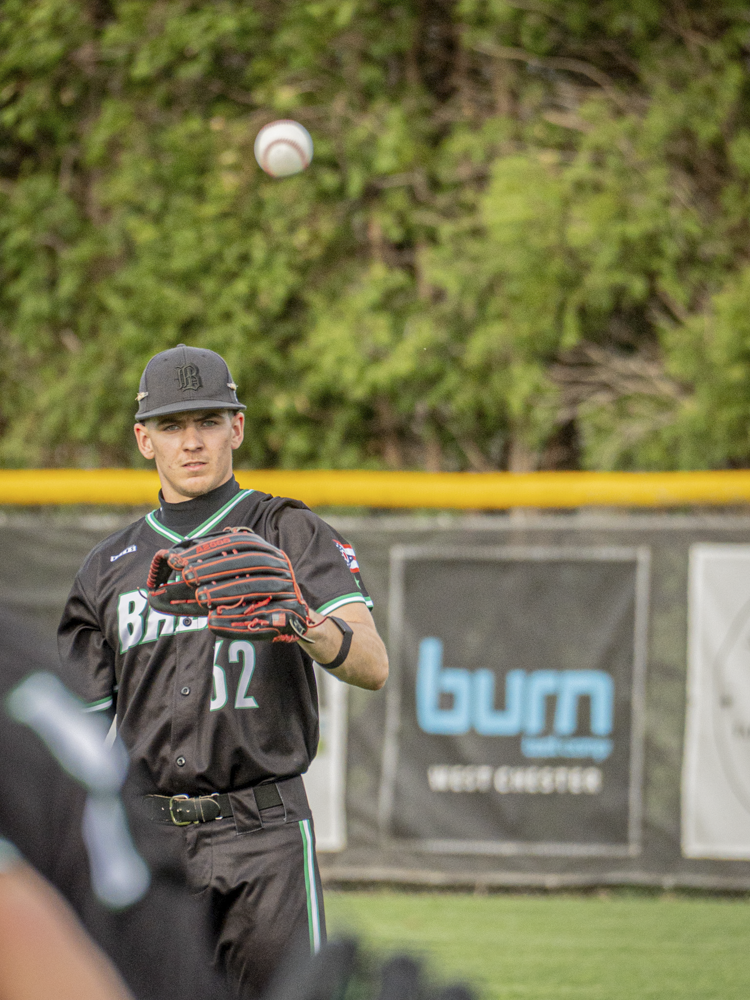
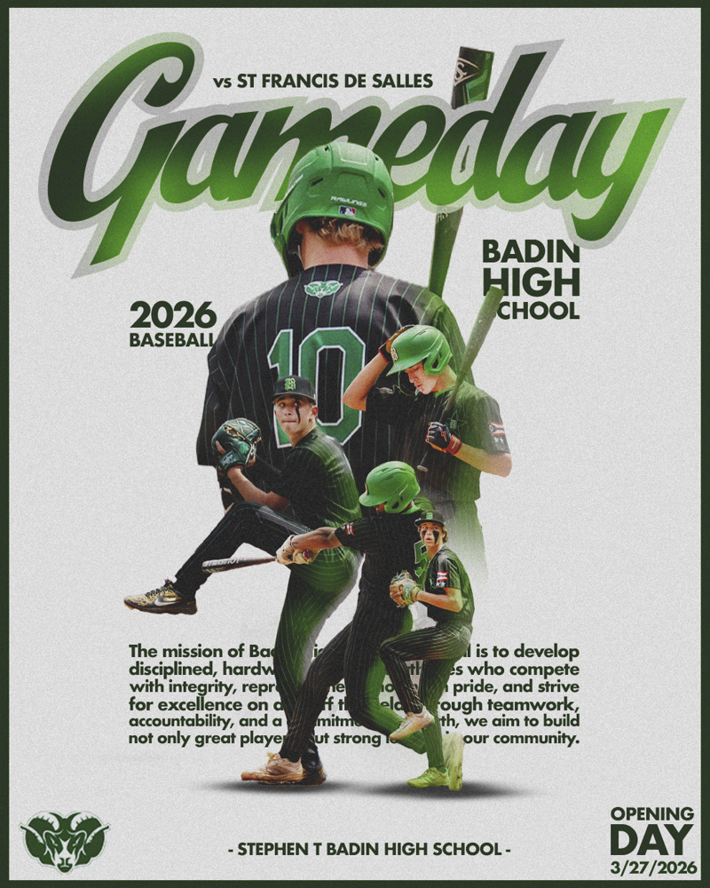

Game Coverage
Photography centered on timing, movement, and emotion during real competition.
Sports Photography • Creative Media • Visual Storytelling
Sports Creative Portfolio
I am a sports media student and creative focused on building strong visuals through photography, design, and storytelling. My work is centered on capturing moments that feel sharp, emotional, and memorable, whether that is live game action, athlete-focused content, or promotional design.
This site is designed to showcase both my creative style and my ability to present work in a clean, professional way. It highlights game coverage, training visuals, creative edits, and interactive web work through a layout that feels polished and easy to navigate.
Photography centered on timing, movement, and emotion during real competition.
Sports graphics and promotional visuals built for teams, athletes, and social media.
Strong visual content that highlights intensity, effort, and athlete identity.
Featured Work

Visuals built around strength, form, and controlled sports storytelling.

Creative sports graphics combining branding, typography, and layered imagery.

Action-focused work centered on pressure, motion, and real moments.